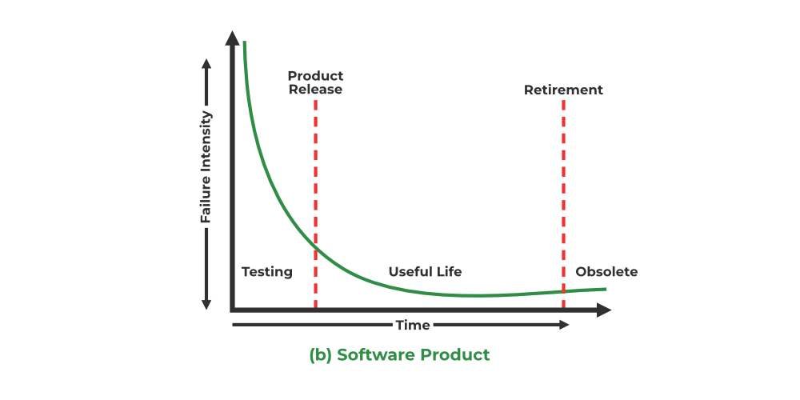
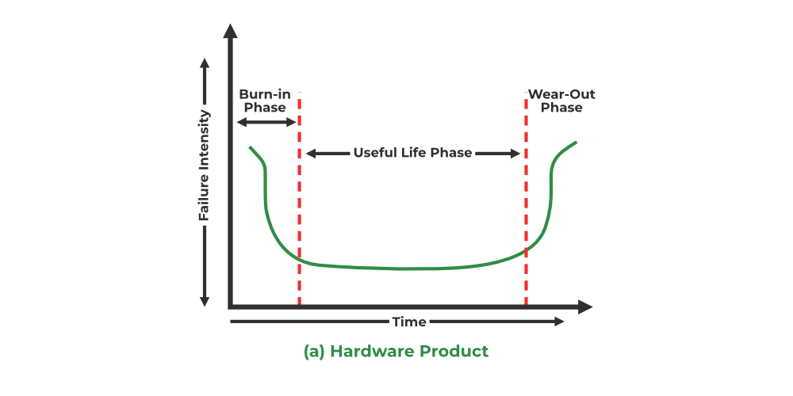

11.1 Software Reliability
Software reliability is the probability that software will operate failure-free for a specified period of time in a specified environment. It is a core quality attribute in McCall's model and ISO/IEC 9126 — see §8.5 Quality Frameworks — and must be specified in the SRS as a non-functional requirement — see §4.9 Requirements Classification.
Definition
- Software reliability measures how consistently a system performs its intended functions without failure over time.
- It is expressed as a probability — the likelihood of failure-free operation during a fixed interval in a fixed environment.
- Reliability is measured per some unit of time (hours, days, execution cycles) rather than as a one-time pass/fail check.
- Software reliability depends entirely on human factors in design — it cannot be predicted from any physical basis like hardware wear.

Software reliability lifecycle
- Software begins with many faults when first created — defects are introduced during requirements, design, and coding.
- After testing and debugging, the system enters a useful life phase with fewer failures.
- Upgrades and enhancements during useful life can introduce new faults, requiring further testing.
- There is no equivalent of hardware preventive maintenance — software does not wear out, but it can become unreliable through changes and environment shifts.
- Unlike hardware, software failures are not time-dependent in the wear-and-tear sense — a fault dormant today may trigger tomorrow when new input or environment conditions appear.
Hardware reliability vs software reliability

| Feature | Hardware Reliability | Software Reliability |
|---|---|---|
| Source of failure | Defects in design, production, and maintenance | Defects in design (and specification) |
| Wear and tear | Failures occur due to physical deterioration | No wear and tear — faults do not age physically |
| Failure warning | Prior deterioration warning before failure | No prior deterioration warning |
| Failure curve | Bathtub curve applies | No bathtub curve for failure rates |
| Time dependence | Failures are time-dependent (wear-out) | Failures are not time-dependent in the physical sense |
| Prediction from design | Reliability can be predicted from physical design | Cannot be predicted from physical basis alone |
| Environment impact | Strongly related to environmental conditions | External environment does not directly degrade code |
| Redundancy | Hardware redundancy has physical limits | Software redundancy (N-version, recovery blocks) can improve reliability |
| Maintenance | Repairs can make hardware more reliable | No preventive maintenance equivalent — fixes require re-testing |
| Metric | Often expressed as MTBF | Measured using ROCOF, MTTF, POFOD, availability, etc. |
Reliability attributes (measures)
- Reliability attributes quantify software dependability and should be specified in the SRS so achievement can be verified objectively.
- A good reliability measure should be observer-independent — different people should obtain the same value when measuring the same system.
| Attribute | Meaning |
|---|---|
| ROCOF (Rate of Occurrence of Failure) | Frequency of unexpected behaviour — how many times the software fails per unit time; total failures divided by observation interval. |
| MTTF (Mean Time To Failure) | Average time between successive failures during execution; only run time is counted — downtime for repair is excluded. |
| MTTR (Mean Time To Repair) | Average time to locate and fix the error that caused a failure. |
| MTBF (Mean Time Between Failures) | MTBF = MTTF + MTTR; time between one failure and the next, including repair time (real time, not execution time). |
| POFOD (Probability of Failure on Demand) | Probability the system fails when a service request is made; e.g. POFOD = 0.001 means 1 failure per 1000 requests. |
| Availability | Probability the system is available for use over a given period; considers both failure frequency and downtime during repair. |
| Fault tolerance | Ability to continue functioning correctly despite unexpected events or component breakdowns — see §11.2 Fault Tolerance. |
| Recoverability | Ability to bounce back quickly from a setback with minimal downtime and data loss. |
| Redundancy | Duplication of critical components to avoid single points of failure and maintain service during faults. |
MTTF calculation example
mttf_calculation.pseudo
// Failures observed at execution time instants (hours of run time)
T = [10, 25, 40, 58, 70] // T1..T5 failure times
n = length(T) - 1 // 4 intervals between 5 failures
// MTTF = average of intervals between successive failures
intervals = []
FOR i = 1 TO n DO
intervals.add(T[i+1] - T[i])
END FOR
MTTF = sum(intervals) / n
// intervals = [15, 15, 18, 12] → MTTF = 60/4 = 15 hours
// MTTR = average repair time (real time, not execution time)
repair_times = [2, 3, 1, 4] // hours to fix each failure
MTTR = sum(repair_times) / length(repair_times) // = 2.5 hours
MTBF = MTTF + MTTR // = 15 + 2.5 = 17.5 hours (real time between failures)Factors affecting software reliability
- Complexity: High software complexity is a major contributor to reliability problems — McCabe's cyclomatic complexity is one complexity-oriented metric; see §6.6 Cyclomatic Complexity.
- Optimistic assumption: Assuming software that runs correctly once will always run correctly leads to hidden defects surfacing later under new conditions.
- Environment change: Software that worked in one environment may fail when the operating environment changes — e.g. the Ariane 5 rocket failure caused by design defects exposed by faster horizontal drift speed not present in Ariane 4.
- Specification and coding errors: Failures arise from ambiguities, oversights, misinterpretation of specifications, inadequate testing, and incorrect or unexpected usage.
- No universal model: Many software reliability models exist, but no single model captures all complexity — each requires assumptions and fits specific contexts; see §11.3 Reliability Growth Models.
Achieving high reliability — four strategies
- Error avoidance: Prevent errors during development using experienced developers, appropriate software engineering tools, and suitable CASE tools.
- Error detection: Find remaining errors through rigorous testing — unit, integration, system, acceptance, and reliability testing.
- Error removal: Fix detected errors and re-test repeatedly until the error is confirmed removed — iterative reliability testing.
- Fault tolerance: When 100% error-free software is impractical, design the system to deliver correct results despite residual failures — N-version programming, recovery blocks, rollback recovery; see §11.2.
- Design for reliability from the start — include fault tolerance, redundancy, and error handling in the architecture.
- Maintain high code quality through modularization, encapsulation, and abstraction for easier maintenance and updates.
- Document the system thoroughly so it can be maintained and tested consistently over time.
- Apply continuous improvement based on user feedback and ongoing testing to adapt to changing requirements.
- Design with security in mind — encryption, access controls, and secure coding practices support overall dependability.
Exam question — Software Reliability
Q: Define software reliability. List reliability attributes with formulas. Differentiate hardware and software reliability. Explain how high reliability is achieved.
Model answer points:
- Software reliability = probability of failure-free operation for fixed time in fixed environment; human-design dependent; no physical wear.
- Lifecycle: many initial faults → testing/debugging → useful life → upgrades may add new faults.
- Attributes: ROCOF, MTTF (execution time only), MTTR, MTBF = MTTF + MTTR, POFOD, availability, fault tolerance, recoverability.
- Hardware vs software: bathtub curve vs none; wear vs no wear; time-dependent vs not; redundancy possible in software.
- Four strategies: error avoidance, detection (testing), removal (debugging), fault tolerance (NVP, RB, rollback).
- Factors: complexity, environment change, specification errors, no universal reliability model.